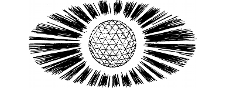

1
Lone Wolf places the Sun-crystal in the palm of your hand, and then he closes your fingers around is multi-faceted surface. At once you sense that the gentle warmth of this artefact belies a tremendous power that is locked within its core. (Record the Sun-crystal on your Action Chart as a Special Item which you keep in the pocket of your tunic. You must discard another item in its favour if you already possess the maximum number of Special Items permissible.)
{kind=link}

‘The Sun-crystal will do you no harm, Grand Master. Only Shom’zaa need have fear of its power,’ says Lord Rimoah, reassuringly.
‘How is this so?’ you ask.
‘The energy that permits the demon to exist in our world is drawn directly from the Plane of Darkness,’ explains Rimoah. ‘There is an open channel between the creature and Naar’s evil domain. It is a slender, ethereal link. This invisible conduit has kept the creature alive during its long entombment, yet soon it may prove to be its undoing, for it is this link to the Plane of Darkness that will trigger the Sun-crystal’s cleansing powers. The merest touch of the crystal upon Shom’zaa’s foul hide will be enough to consign it to oblivion.’
With your briefing now complete, Lone Wolf orders you to return to your chamber to make swift preparations for an immediate voyage to Bor. You collect your equipment and your Kai Weapon, say a hurried farewell to your fellow Grand Masters, and then race to the training park where Lord Rimoah is awaiting you in the boarding cage. Lone Wolf bids you good luck and godspeed as you step inside, and proudly you return his salute as the cage is winched up to the stern deck of Cloud-dancer. Rimoah gives the crew the command to depart and, as the great craft gets underway, you stand at the aft rail and watch as the frosted walls and towers of the Kai Monastery swiftly recede into the distance.
Lord Rimoah invites you to accompany him to the captain’s quarters where, to your surprise, you discover the cabin is empty; Banedon is not aboard. ‘The Guildmaster is unable to travel with us,’ explains Rimoah, ‘but he has placed his skyship and crew entirely at our disposal. We owe him a debt of gratitude, for time is against us and there can be no swifter way for us to reach our destination.’
During the fourteen hours that it takes to travel by skycraft to Bor, Lord Rimoah tells you much about the kingdom of the dwarves, their long history, and their proud legends. You also learn that your destination is Boradon, the principal city of Bor, and you are intrigued to discover that in your native language this ancient Drodarin name has a somewhat evocative meaning: ‘the Mountain of Blood’.
To continue, turn to 240.